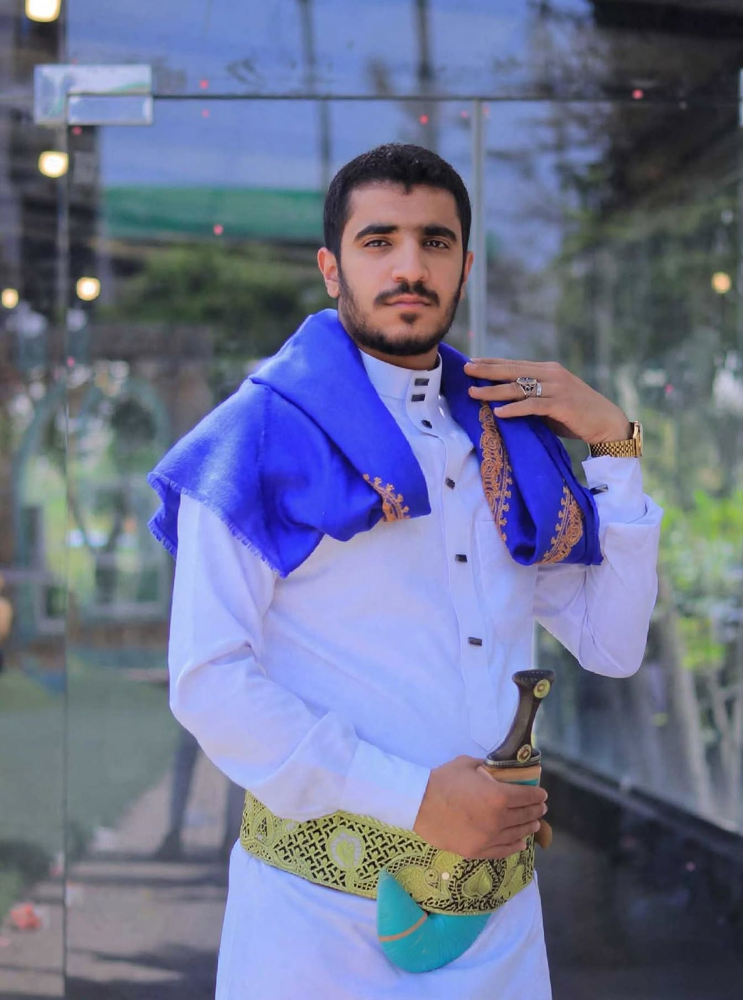
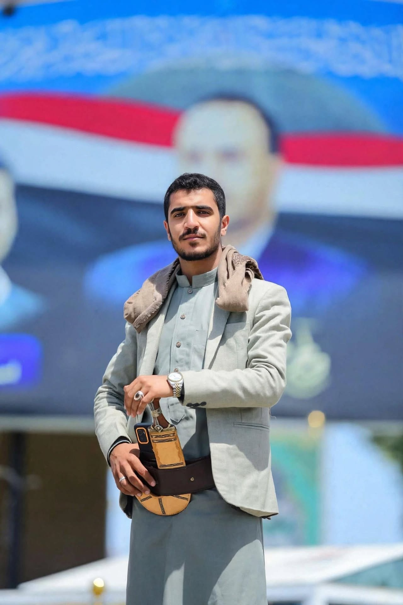
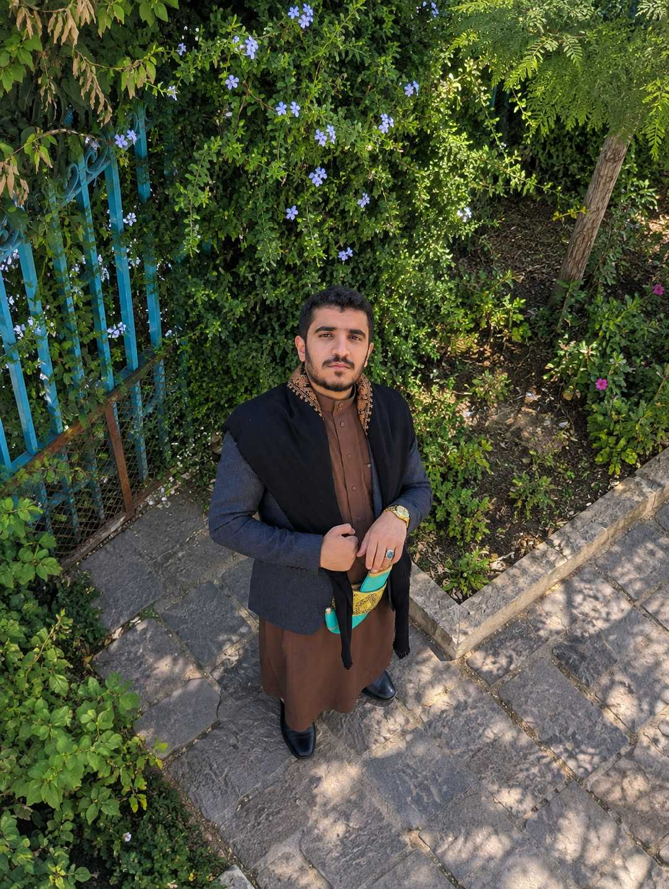
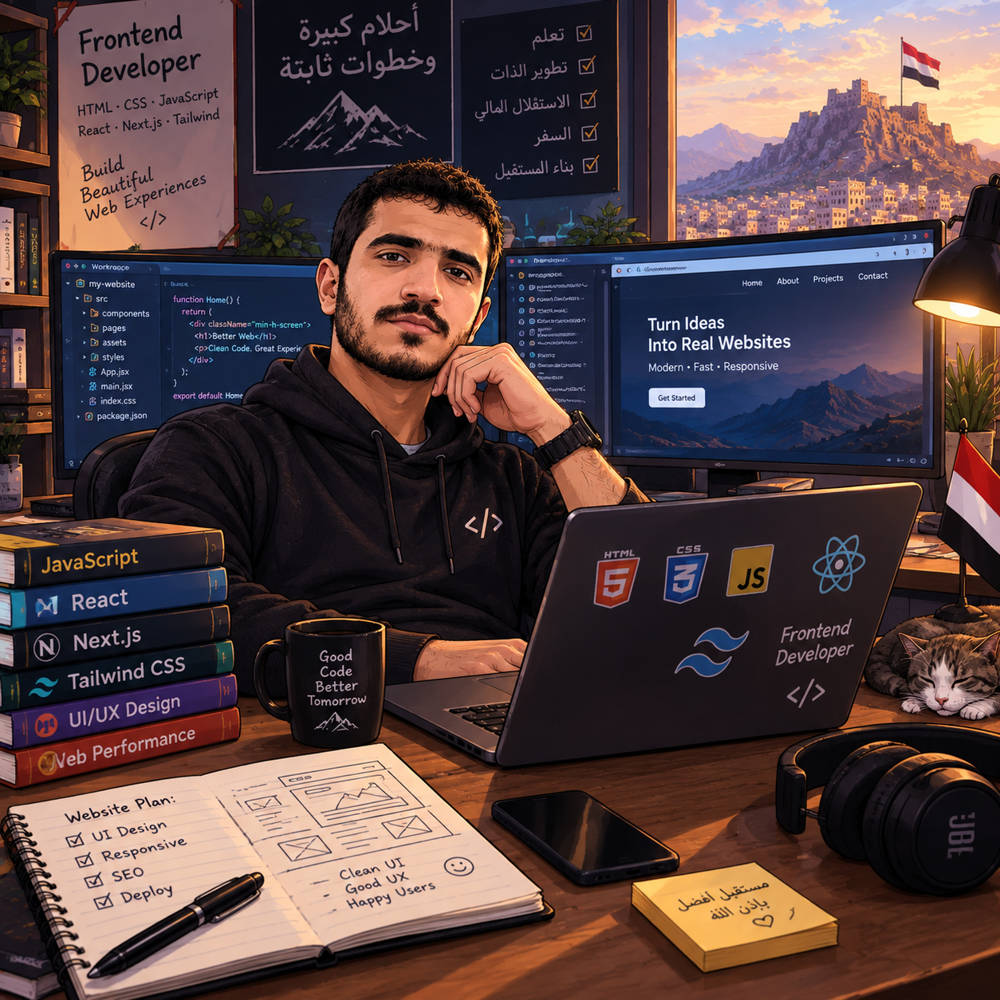

PROJECT / 01
نظام الباتونيا
منظومة لحجز وإدارة قاعة مناسبات، تشمل الحجوزات والمدفوعات والخدمات والأدوات الإدارية. يجري العمل على توسيع التجربة لتشمل تطبيق أندرويد.
أنا بشير شندق، مطور برمجيات ومواقع أهتم ببناء تجارب رقمية عملية، واضحة، ومتقنة. أوازن بين الواجهة التي يشعر بها المستخدم والنظام الذي يعمل خلفها.

أحب تحويل الأفكار إلى منتجات رقمية قابلة للاستخدام، من تصميم الواجهات وتنظيم تجربة المستخدم إلى بناء وظائف الموقع وربطها بقواعد البيانات. أميل إلى الواجهة الأمامية، وأعمل كذلك على تطوير الأنظمة من جهة الخادم.
أستمد من العمارة والتراث اليمني حسّ التفاصيل والمواد والألوان، وأبحث عن طريقة معاصرة لتقديم هذه الهوية دون أن تطغى على وضوح المنتج.
أنظمة وتطبيقات تعالج احتياجات واقعية، مع الاهتمام بالتجربة والتنظيم وقابلية التطوير.
منظومة لحجز وإدارة قاعة مناسبات، تشمل الحجوزات والمدفوعات والخدمات والأدوات الإدارية. يجري العمل على توسيع التجربة لتشمل تطبيق أندرويد.
مشروع مكتبة إلكترونية يعتمد على PHP وMySQL لتنظيم المحتوى وتقديمه من خلال واجهة ويب.
مشروع يركز على توظيف تقنيات الويب وASP.NET في بناء وظائف إدارية تخدم البيئة المدرسية.
مشروع تخرج يرتبط بمنصة ERPNext وتخطيط موارد المؤسسة، مع التركيز على فهم ترابط العمليات والبيانات.
قائمة بالتقنيات التي أتعامل معها، دون نسب تقييم غير موثقة.
أفهم الحاجة، ثم أقسمها إلى وظائف صغيرة يمكن تطويرها واختبارها.
استخدام الهاتف وأدوات مثل Termux جزء من رحلتي التقنية، وليس حدًا لما أستطيع تعلمه أو بناؤه.
أهتم بأن تعمل الوظائف فعليًا، وأن تكون التجربة مفهومة وقابلة للصيانة والتطوير.


